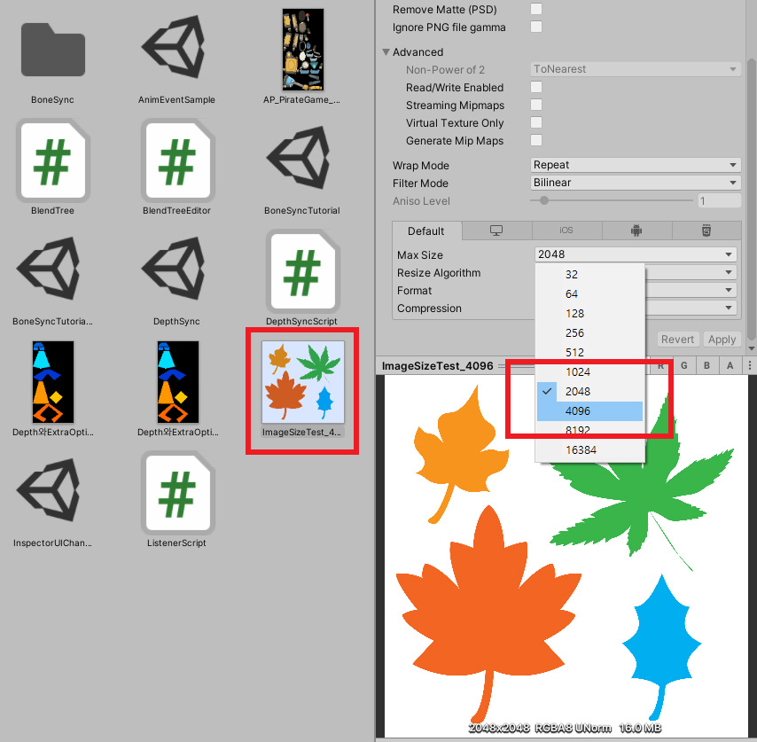
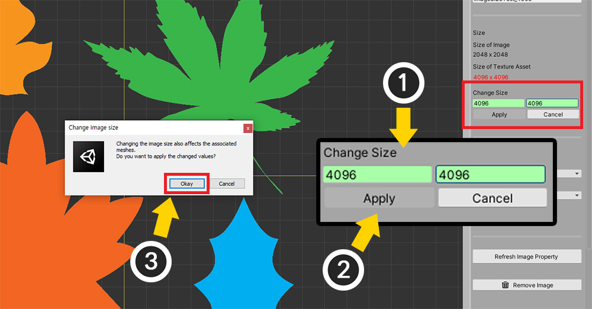
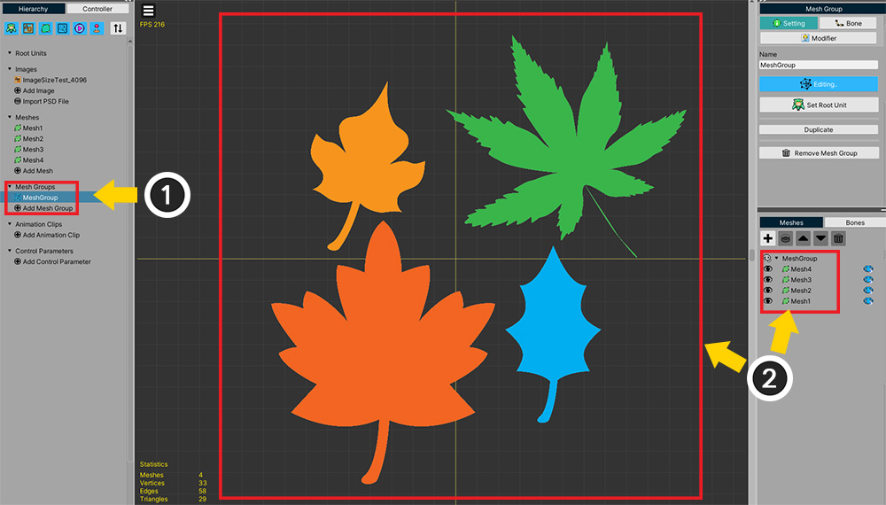

AnyPortrait > Manual > Changing the image size
Changing the image size
1.3.4
In most cases, the "Image" used in AnyPortrait follows the texture asset settings in Unity.
So in general, "actual size of image", "imported size as texture asset", and "size property in AnyPortrait" are all the same.
However, in some cases, the size of the image may have different values.
You can import by reducing the size of the image from the texture asset, and you can also set the size of the image differently in AnyPortrait.
This page has useful information for these special situations.
Note
The function introduced on this page is not to change the size of the image file.
You need to make a distinction between "actual size" and "recognized size by Unity or AnyPortrait", this page is not about "actual size".
Change the size property of an image

When you select an image in AnyPortrait editor, the above information appears.
(1) The size of the image in AnyPortrait.
(2) The size of the image as the Texture Asset in Unity.
(3) UI to change the image size.

If the size of a texture asset is different from the size in AnyPortrait, how will it appear?
The actual image size of the prepared example was "4096 x 4096", and was changed to "2048 x 2048" due to Unity's import settings.
And since we opened that image in AnyPortrait, it now looks the same as "2048 x 2048".
Let's change the texture import settings as above to make the image bigger or smaller.
(In addition to this example, there are various cases where the size of the texture changes.)

Let's go back to the AnyPortrait editor and select an image.
(1) You can see that the size of the texture asset has been changed to "4096 x 4096".
It has been changed to red text because it is different from AnyPortrait's image size.
Normally, there is no big problem even if the images are produced with different size properties.
Rather, be careful, as resizing the image can affect the meshes you've already worked with.
However, at the beginning of work, if you want to work with consistent size properties, change the image size in the following order.

(1) In the size input box of the Change Size item, input the width and height of the image you want to change, respectively.
(2) Click the Apply button.
(3) A warning message appears. Press the Okay button.

At this point, another warning message appears.
This is a message asking how to handle this, as resizing the image affects the meshes in the mesh group.
Two options are provided, and you can press the button as described below.
Press the Calibrate Scale or Ignore button to change the image size.
Whether to calibrate the size of meshes in a mesh group
When you resize the image, the meshes are resized by the image's resizing ratio.
So the character's meshes are not damaged.
However, the case of meshes placed in a mesh group is slightly different.

For the sake of explanation, we set up the above situation.
(1) Created one mesh group.
(2) Added 4 meshes here.

Let's come back and resize the image.
(1) This time, in order to artificially change the width and height ratio of the image, we reduce the width by half.
(2) Press the Apply button and (3) press the Okay button in the warning message.

The warning message you saw above appears.
Indicates that meshes within an existing mesh group can be affected.
You can see that there are two options except for Cancel.
- Calibrate Scale : It goes through a calibration process that reverses the image size change ratio to the default size of the mesh in the mesh group to maintain the original shape as much as possible.
- Ignore : Changes the image size without going through a separate correction process.
(1) First, click the Calibrate Scale button to check the result.

Let's check the meshes before checking the mesh groups.
As the width of the image is reduced by half, you can see that the meshes are also horizontally shrink.

However, if you select a mesh group and check it, it looks like the meshes haven't changed in size.
(1) With Edit Default Transform enabled, select the mesh.
(2) You can see that the X size is doubled.
The Calibrate Scale option will calibrate the meshes to keep their appearance as good as possible.
However, please note that this is a basic calibration and may show different results if modifiers are applied.

Let's go back to before we resize the image and press the Ignore button this time.

If you select a mesh group, you can see that the meshes are also reduced by the ratio of the image reduced.